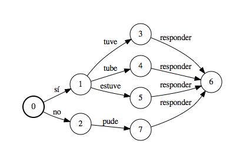

This paper describes the release of a set of English translations (obtained on Amazon's Mechcanical Turk) and ASR lattice output (produced with Kaldi). Together, this data supplements existing LDC datasets (in the form of audio and Spanish transcriptions), yielding a four-way parallel corpus for research in Spanish–English spoken language translation.
The LDC datasets that this dataset extends are as follows:
| Audio | Transcripts | |
|---|---|---|
| Fisher Spanish | LDC2010S01 | LDC2010T04 |
| CALLHOME Spanish | LDC96S35 | LDC96T17 |
If you use this dataset, please cite the following paper, which also contains a number of experiments to compare against:
Improved Speech-to-Text Translation with the Fisher and Callhome Spanish–English Speech Translation Corpus
Matt Post, Gaurav Kumar, Adam Lopez, Damianos Karakos, Chris Callison-Burch and Sanjeev Khudanpur
IWSLT 2013
PDF BIB

An example lattice from the dataset